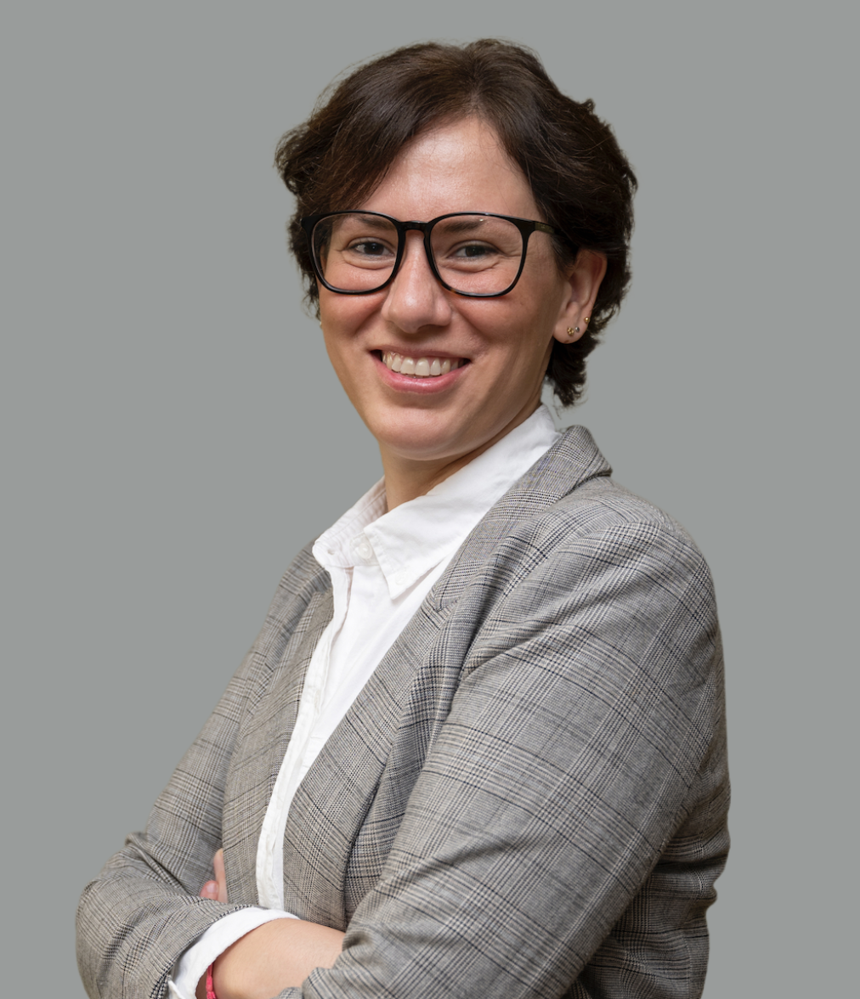

Sobre mí
🎓 Estudié Relaciones Internacionales en Argentina (BA, Universidad Católica de Córdoba), Políticas Públicas en Reino Unido (MPP, University of Oxford), y Ciencia Política en Italia (PhD, Università degli Studi di Camerino). En pocas palabras, soy politóloga por (de)formación profesional. Pero, en cualquier caso, lo que verdaderamente me define es una enorme curiosidad y la pasión por contar historias.
📊 Formación, actitud y pasión confluyeron en la Ciencia de Datos (PgD, FLACSO), y hoy ayudo a gobiernos y organizaciones de la sociedad civil a investigar, medir, evaluar y reportar el impacto de sus acciones.
🤓 Mi perfil académico es bien ecléctico. O no, según se vea, porque todo tiene que ver con todo. Me he especializado en estadística y datos, políticas públicas y política doméstica e internacional de Corea del Norte. Además, he sido docente en universidades de Argentina y Paraguay, e investigadora visitante en universidades de Estados Unidos y Colombia.
👩🏻💻 Como Political Data Scientist he sido responsable de investigar, analizar y realizar visualizaciones para proyectos sobre educación mediática, desinformación, protección judicial de migrantes venezolanos, integración de migrantes, polarización, participación de mujeres en política, movimientos anti-vacuna y deportes para el desarrollo.
📝 Algunos de mis escritos de no ficción han sido premiados en el Concurso Internacional de Ensayos del Banco Mundial (Estocolmo, 2010), en el Concurso Internacional de Ensayos I4A del Banco Mundial (Bruselas, 2010), en el Concurso Internacional de Ensayos de UNESCO & Goi Peace Foundation (Tokyo, 2010), en el Premio de Ensayo “Alas de la Excelencia” (St. Gallen, 2011), en la Competencia Nacional de Ensayos sobre la Península Coreana (Buenos Aires, 2022), y en el XXXVI Premio de Literatura Luis José de Tejeda (Córdoba, 2023).
🔗 Actualmente integro el Directorio de Chevening Alumni Argentina, el Grupo de Trabajo sobre Corea en el Consejo Argentino para las Relaciones Internacionales (CARI), el Consejo Académico del Centro para la Apertura y el Desarrollo de América Latina (CADAL), la Iniciativa Jóvenes Líderes de las Américas (YLAI), RLadies Global, la Red de Politólogas y la Oxford Union Society.
🚀 Fui oradora TEDx dos veces. En mi tiempo libre escribo en mi blog, hablo de exploración espacial en mi podcast, saco fotos, toco el violín y colecciono Lego.
🌎 Viajé mucho (+50 países). Viajo mucho. Hoy vivo en Buenos Aires, pero siempre seré de Villa María (AR) —y un poquito de Oxford—.